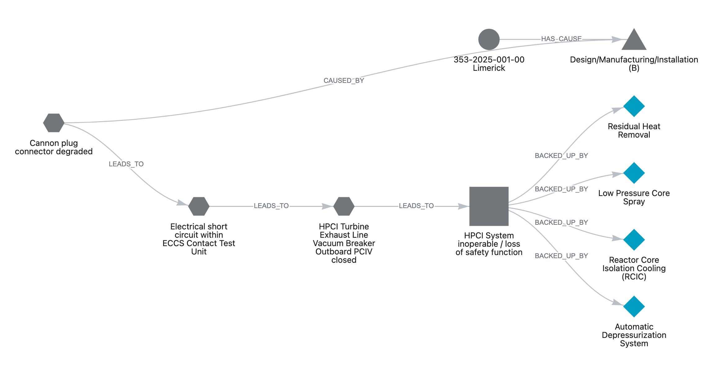

Knowledge graph
Pick an example question above.
Answering questions about U.S. nuclear-plant failure reports — two ways, compared.
When something goes wrong at a U.S. nuclear power plant, the operator files a public Licensee Event Report (LER) with the Nuclear Regulatory Commission — a standardized account of what failed, why, and what the safety consequences were. This project reads 833 of these reports (2020–2026) and answers questions about them two different ways:

The demo puts the same question to both, side by side, to show where linking reports into a graph beats plain search — and where it doesn't. It also estimates, from how often each outcome actually occurred across these reports, which systems and failures carry the most observed risk.
Pick a ready-made example below, or switch to Live to type your own.
Questions chosen in advance to test both systems on different kinds of task. Pick one to see how each answers it — instantly, because these were computed ahead of time.
Pick an example question above.
The similarity-search baseline.
The measured results
Loading the measured results…